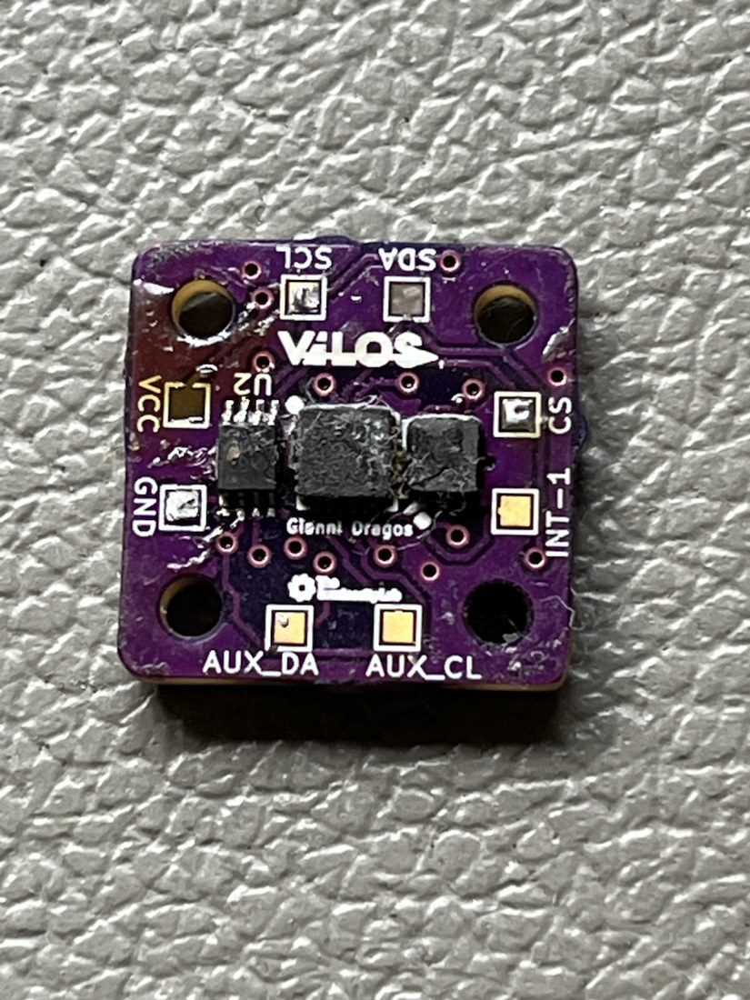
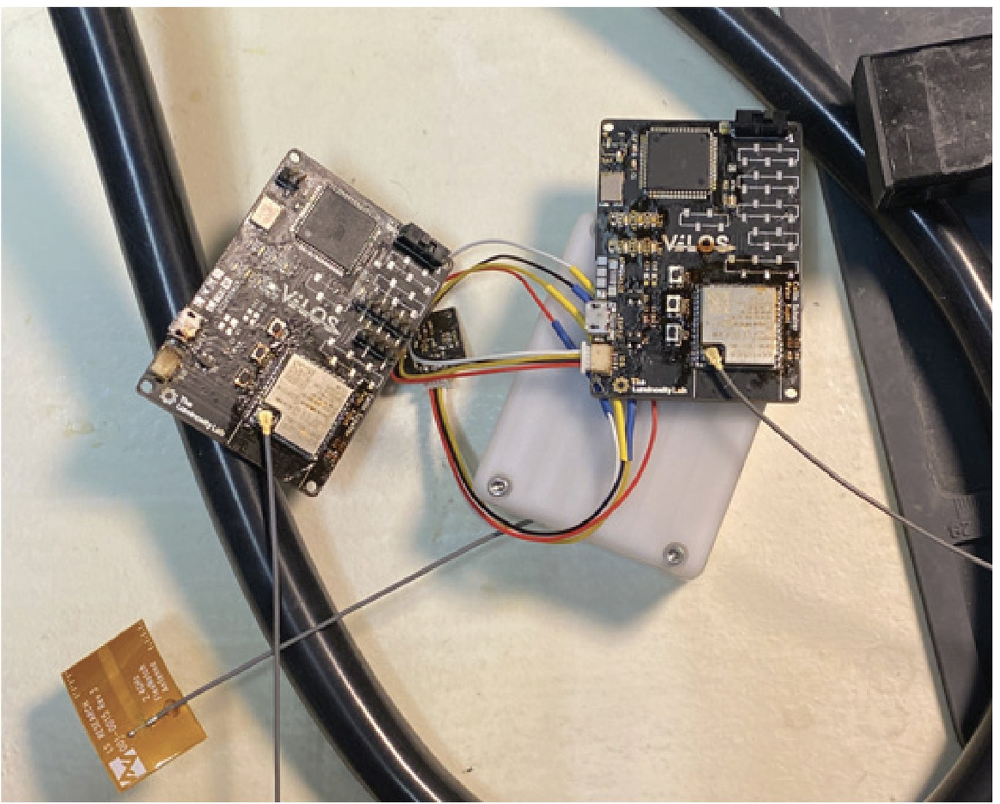

Luminosity Lab / VELOS
Variable Exploratory Lunar Observation System Probe
Lunar sensor probe electronics work focused on IMU integration and a data-transfer interface for the probe daughterboard.

My work
IMU integration and data access for the probe electronics.
- NeedThe probe needed compact sensor electronics and a practical way to retrieve test data from the daughterboard.
- SenseI worked on the IMU hardware used to capture acceleration and orientation-related data.
- TransferI developed an FTP server interface so data could be accessed during development and test workflows.
- ValidateThe hardware photos, CAD, and prototype wiring show how the electronics fit into the full probe system.
My contribution focused on the IMU portion of the probe electronics. I worked with the inertial measurement hardware used to capture acceleration and orientation-related data during launch, impact, and probe operation.
I also developed an FTP server to interface with the daughterboard, giving the system a practical way to access and transfer data from the probe electronics during development and test workflows. That interface work helped connect the physical sensor board to a usable data path for debugging and validation.
Open technical paperPhotos
Probe hardware and system context.


